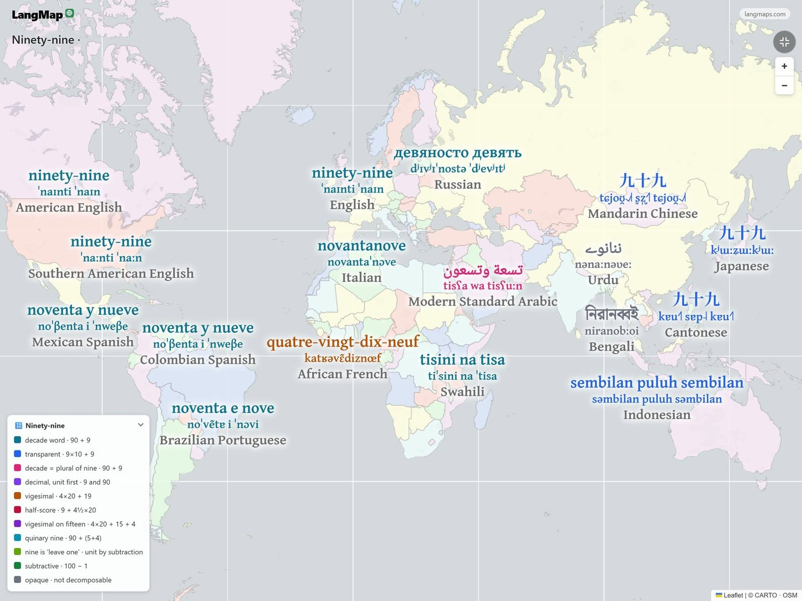

The Secret Life of 99 (Part 3): When Ninety Means Four and a Half Twenties
- French expresses 99 as "four twenties plus nineteen." But twenty-based counting is far from unusual in Europe.
- Basque, Welsh, Breton, and Danish preserve different versions of this system. Danish even expresses ninety through an ancient formula involving four and a half twenties.
- Thousands of years earlier, Mesopotamian civilizations developed counting based on sixty, leaving traces in the clocks we use today.

Contents
Four Twenties and Nineteen
In Part 2, we discovered that Khmer expresses nine as five plus four.
We also found that older Khmer could count by twenties.
But twenty-based counting is not limited to Asia.
Consider French.
Ninety-nine is quatre-vingt-dix-neuf.
Literally, four twenties plus nineteen.
70: soixante-dix = 60 + 10
80: quatre-vingts = 4 × 20
90: quatre-vingt-dix = 4 × 20 + 10
99: quatre-vingt-dix-neuf = 4 × 20 + 19
It looks almost like a mathematical puzzle.
Yet French speakers use these expressions naturally.
And not all French-speaking regions use the same system.
In Belgium and parts of Switzerland, ninety is nonante.
So 99 can be nonante-neuf.
Much simpler.
But why does French preserve four twenties?
And why do similar structures appear elsewhere in Europe?
Europe's Hidden Twenties
Travel to the Basque Country, between Spain and France.
Basque is not an Indo-European language.
Yet its numerical system has a strong twenty-based structure.
20: hogei
40: berrogei = 2 × 20
60: hirurogei = 3 × 20
80: laurogei = 4 × 20
99: laurogeita hemeretzi = 4 × 20 + 19
Now cross to Wales.
Traditional Welsh counting also uses twenty.
Twenty is ugain.
Forty is deugain.
Sixty is trigain.
Eighty is pedwar ugain.
20: ugain
40: deugain
60: trigain
80: pedwar ugain
And Welsh has another delightful expression for 99.
Cant namyn un.
Literally, "a hundred minus one."
An alternative traditional expression is pedwar ar bymtheg a phedwar ugain, meaning nineteen plus four twenties.
Modern Welsh also has a decimal system, in which 99 is naw deg naw.
Three ways to approach the same number.
The story continues in Brittany, in northwestern France.
Breton, another Celtic language, also preserves twenty-based numbers.
20: ugent
40: daou-ugent = 2 × 20
60: tri-ugent = 3 × 20
80: pevar-ugent = 4 × 20
99: naontek ha pevar-ugent = 19 + 4 × 20
French, Basque, Welsh, Breton.
Different languages, but similar numerical possibilities.
Even English preserves the word score, meaning twenty.
Abraham Lincoln's famous "four score and seven years ago" meant eighty-seven years ago.
Twenty-based counting is not an isolated curiosity.
But in Denmark, the arithmetic becomes even more surprising.
Denmark: Four and a Half Twenties
Danish is a North Germanic language, closely related to Norwegian and Swedish.
But its traditional tens are very different.
Twenty is tyve.
Forty is fyrre.
Sixty is tres.
Eighty is firs.
And ninety?
Halvfems.
The historical forms reveal a remarkable pattern.
20: tyve
40: fyrre = 4 × 10
50: halvtreds = 2½ × 20
60: tres = 3 × 20
70: halvfjerds = 3½ × 20
80: firs = 4 × 20
90: halvfems = 4½ × 20
Why four and a half?
The older Danish expressions used a special way of referring to the next whole number minus one half.
The historical expression behind halvfems meant four and a half times twenty.
In modern Danish, these expressions are shortened.
Speakers do not consciously perform multiplication every time they say ninety.
But the old arithmetic remains hidden inside the words.
And Danish adds one more twist.
The unit comes before the tens.
Ninety-nine is nioghalvfems.
ni = 9
og = and
halvfems = 90
99 = nine and four-and-a-half twenties
It may sound bewildering to outsiders.
Yet it is perfectly natural to Danish speakers.
But if twenty already seems an unusual foundation for numbers, an ancient civilization went much further.
It built mathematics around sixty.
Mesopotamia: The Power of Sixty
Thousands of years ago, in Mesopotamia, the Sumerians developed numerical traditions in which sixty played a central role.
Later, Babylonian mathematicians developed a sophisticated positional system based on sixty.
Why sixty?
Consider how many numbers divide evenly into it.
60 ÷ 2 = 30
60 ÷ 3 = 20
60 ÷ 4 = 15
60 ÷ 5 = 12
60 ÷ 6 = 10
60 ÷ 10 = 6
60 ÷ 12 = 5
Sixty is remarkably convenient for fractions.
The precise historical reasons for the adoption of sixty are still debated, but its mathematical advantages are clear.
Now imagine writing 99 in a positional base-60 system.
Instead of nine tens plus nine, it becomes one sixty plus thirty-nine.
Decimal: 99
Sexagesimal: 1,39
1 × 60 + 39 = 99
The comma separates base-60 positions.
This is not the decimal number 1.39.
It is another way of organizing the same quantity.
The ancient Mesopotamian systems evolved over centuries, so Sumerian numerical notation and later Babylonian positional notation should not be treated as identical.
But their influence was immense.
And this ancient numerical tradition has not entirely disappeared.
You probably use part of it every day.
The Ancient World Inside Your Clock
Look at a clock.
One hour contains sixty minutes.
One minute contains sixty seconds.
Why sixty?
Why not a hundred?
The use of sixty in time subdivisions belongs to a long historical tradition of sexagesimal mathematics, transmitted through astronomy and later adopted into modern timekeeping.
The Sumerians did not invent the modern clock.
But ancient Mesopotamian mathematics helped shape the numerical conventions behind it.
And geometry preserves a similar pattern.
1 hour = 60 minutes
1 minute = 60 seconds
1 circle = 360 degrees
1 degree = 60 arcminutes
1 arcminute = 60 arcseconds
Thousands of years of mathematical history remain embedded in our everyday lives.
We began with an innocent question.
How do people say 99?
We traveled through Chinese characters, Japanese poetry, Korean manuscripts, Vietnamese markets, Thai loanwords, Khmer's fives, Europe's twenties, and Mesopotamia's sixties.
And now the journey ends with the clock in front of us.
One Number, Many Histories
Look at 99 one last time.
Chinese: 九十九 = 9 × 10 + 9
Korean: 아흔아홉 = 90 + 9
Vietnamese: chín mươi chín = 9 × 10 + 9
Thai: เก้าสิบเก้า = 9 × 10 + 9
Khmer: កៅសិបប្រាំបួន = 90 + (5 + 4)
French: quatre-vingt-dix-neuf = 4 × 20 + 19
Basque: laurogeita hemeretzi = 4 × 20 + 19
Danish: nioghalvfems = 9 + (4½ × 20)
Base-60 notation: 1,39 = 1 × 60 + 39
The number never changes.
But the words used to express it carry traces of different histories.
Five, ten, twenty, and sixty have all shaped human ways of counting.
Some systems disappeared.
Some survived alongside newer ones.
Others left their fingerprints on everyday speech.
And some became so deeply embedded in civilization that we no longer notice them.
Ninety-nine is just one number. But hidden inside it is a journey through thousands of years of human history.